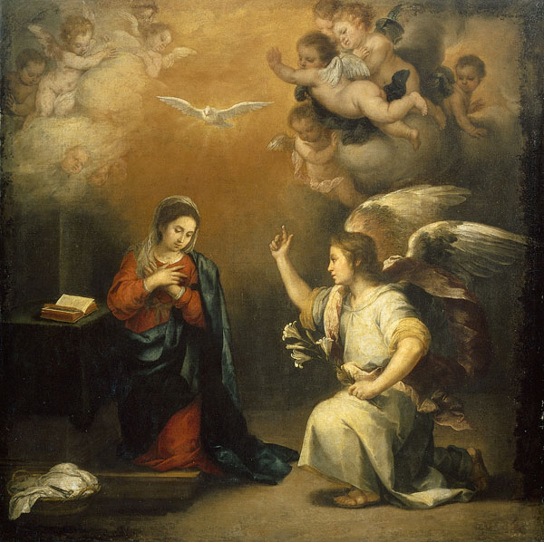

14. I AVOW, with all the Church, that Mary, being but a mere creature that has come from the hands of the Most High, is, in comparison with His Infinite Majesty, less than an atom; or rather she is nothing at all “He who is,” and thus by consequence that grand Lord, always independent and sufficient to Himself, never had, and has not now, any absolute need of the Holy Virgin for the accomplishment of His will and for the manifestation of His glory. He has but to will, in order to do every, because He only is thing.
15. Nevertheless I say that, things being supposed as they are now, God having willed to commence and to complete His greatest works by the most holy Virgin, since He created her, we may well think He will not change His conduct in the eternal ages; for He is God, and He changes not either in His sentiments or in His conduct.
16. God the Father has not given His Only-begotten to the world except by Mary. Whatever sighs the patriarchs may have sent forth—whatever prayers the prophets and the saints of the ancient law may have offered up to obtain that treasure for full four thousand years—it was but Mary that merited it; it was but Mary who found grace before God by the force of her prayers and the eminence of her virtues. The world was unworthy, says St. Augustine, to receive the Son of God immediately from the Father’s hands. He has given Him to Mary in order that the world might receive Him through her.
The Son of God has made Himself Man; but it was in Mary and by Mary. God the Holy Ghost has formed Jesus Christ in Mary; but it was only after having asked her consent by one of the first ministers of His court.
17. God the Father has communicated to Mary His fruitfulness, as far as a mere creature was capable of it, in order that He might give her the power to produce His Son, and all the members of His mystical body.
18. God the Son has descended into her virginal womb, as the new Adam into the terrestrial paradise, to take His pleasure there, and to work in secret the marvels of His grace.
God made Man has found His liberty in seeing Himself imprisoned in her womb. He has made His Omnipotence shine forth in letting Himself be carried by that blessed Virgin. He has found His glory and His Father’s in hiding His splendours from all creatures here below, and revealing them to Mary only. He has glorified His Independence and His Majesty, in depending on that sweet Virgin, in His Conception, in His Birth, in His Presentation in the Temple, in His Hidden Life of thirty years, and even in His Death, where she was to be present, in order that He might make with her but one same sacrifice, and be immolated to the Eternal Father by her consent; just as Isaac of old was offered by Abraham’s consent to the Will of God. It is she who has suckled Him, nourished Him, supported Him, brought Him up, and then sacrificed Him for us.
O admirable and incomprehensible dependence of a God, which the Holy Ghost could not pass in silence in the Gospel, although He has hidden from us nearly all the admirable things which that Incarnate Wisdom did in His Hidden Life, as if He would enable us, by His revelation Body. God the Son has of that at least, to understand something of its price! Jesus Christ gave more glory to God the Father by submission to His Mother during those thirty years than He would have given Him in converting the whole world by the working of the most stupendous miracles. Oh, how highly we glorify God, when, to please Him, we submit ourselves to Mary, after the example of Jesus Christ, our Sole Exemplar!
19. If we examine narrowly the rest of our Blessed Lord’s Life, we shall see that it was His Will to begin His miracles by Mary. He sanctified St. John in the womb of St. Elizabeth his mother; but it was by Mary’s word. No sooner had she spoken than John was sanctified; and this was His first and greatest miracle of grace.
At the marriage at Cana He changed the water into wine; but it was at Mary’s humble prayer; and this was His first miracle of nature. He has begun and continued His miracles by Mary, and He will continue them to the end of ages by Mary also.
20. God the Holy Ghost being barren in God—that is to say, not producing another Divine Person—is become fruitful by Mary, whom He has espoused. It is with her, in her, and of her, that He has produced His Masterpiece, which is a God made Man, and whom He goes on producing in the persons of His members daily to the end of the world. The predestinate are the members of that Adorable Head. This is the reason why He, the Holy Ghost, the more He finds Mary, His dear and indissoluble Spouse, in any soul, becomes the more active and mighty in producing Jesus Christ in that soul, and that soul in Jesus Christ.
21. It is not that we may say that our Blessed Lady gives the Holy Ghost His fruitfulness, as if He had it not Himself. For inasmuch as He is God, He has the same fruitfulness or capacity of producing as the Father and the Son, only that He does not bring it into action, as He does not produce another Divine Person. But what we want to say is, that the Holy Ghost chose to make use of our Blessed Lady, though He had no absolute need of her, to bring His fruitfulness into action, by producing in her and by her Jesus Christ in His members; a mystery of grace unknown to even the wisest and most spiritual among Christians.
22. The conduct which the Three Persons of the Most Holy Trinity have deigned to pursue in the Incarnation and first coming of Jesus Christ, They still pursue daily in an invisible manner throughout the whole Church, and They will still pursue it even to the consummation of ages in the last coming of Jesus Christ.
23. God the Father made an assemblage of all the waters, and He named it the sea (mare). He has made an assemblage of all His graces, and He has called it Mary (Maria). This great God has a most rich treasury in which He has laid up all that He has of beauty, of splendour, of rarity, and of preciousness, even to His own Son; and this immense treasury is none other than Mary, whom the Saints have named the Treasure of the Lord, out of whose plenitude all men are made rich.
24. God the Son has communicated to His Mother all that He has acquired by His Life and by His Death, His infinite merits and His admirable virtues; and He has made her the treasuress of all that His Father has given Him for His inheritance. It is by her that He applies His merits to His members, and that He communicates His virtues, and distributes His graces. She is His mysterious canal; she is His aqueduct, through which He makes His mercies flow gently and abundantly.
25. To Mary, His faithful Spouse, God the Holy Ghost has communicated His unspeakable gifts; and He has chosen her to be the dispensatrix of all He possesses, in such sort that she distributes to whom she wills, as much as she wills, as she wills, and when she wills, all His gifts and graces. The Holy Ghost gives no heavenly gift to men which He does not pass through her virginal hands. Such has been the Will of God, who has willed that we should have everything in Mary; so that she who impoverished, humbled, and hid herself even to the abyss of nothingness by her profound humility her whole life long, should now be enriched, and exalted by the Most High. Such are the sentiments of the Church and the Holy Fathers.
26. If I were speaking to the free-thinkers of these times, I would prove what I have said so simply, drawing it out more at length, and confirming it by the Holy Scriptures and the Fathers, quoting the original passages, and adducing various solid reasons, which may be seen at length in the book of Fr. Poire (La Triple Couronne de la Sainte Vierge). But as I speak particularly to the poor and simple, who being of good-will, and having more faith than the common run of scholars, believe more simply and so more meritoriously, I content myself with putting out the truth quite simply, without stopping to quote the original passages, which they would not understand. Nevertheless, without making much research, I shall not fail from time to time to bring forward some of them. But let us now go on with our subject.
27. Inasmuch as grace perfects nature, and glory perfects grace, it is certain that our Lord is still, in heaven, as much the Son of Mary as He was on earth; and that, consequently, He has preserved the most perfect obedience and submission of all children towards the best of all mothers. But we must take great pains not to conceive of this dependence as any abasement or imperfection in Jesus Christ. For Mary is infinitely below her Son, who is God, and therefore she does not command Him, as a mother here below would command her child, who is below her. Mary, being altogether transformed into God by grace, and by the glory which transforms all the Saints into Him, asks nothing, wishes nothing, does nothing which is contrary to the Eternal and Immutable Will of God. When we read, then, in the writings of SS. Bernard, Bernardine, Bonaventure, and others, that in heaven and on earth everything, even to God Himself, is subject to the Blessed Virgin, they mean to say that the authority which God has been well pleased to give her is so great, that it seems as if she has the same power as God, and that her prayers and petitions are so powerful with God, that they always pass for commandments with His Majesty, who never resists the prayer of His dear Mother, because she is always humble and conformed to His Will.
If Moses, by the force of his prayer, arrested the anger of God against the Israelites, in a manner so powerful that the Most High and infinitely merciful Lord, being unable to resist him, told him to let Him alone, that He might be angry with and punish that rebellious people, what must we not with much greater reason think of the prayer of the humble Mary, that worthy Mother of God, which is more powerful with His Majesty than the prayers and intercessions of all the Angels and Saints both in heaven and on earth?
28. Mary commands in the heavens the Angels and the Blessed. As a recompense for her profound humility, God has given her the power and permission to fill with Saints the empty thrones from which the apostate angels fell by pride. Such has been the will of the Most High, who exalts the humble, that heaven, earth, and hell bend with good will or bad will to the commandments of the humble Mary, whom He has made sovereign of heaven and earth, general of His armies, treasurer of His treasures, dispenser of His graces, worker of His greatest marvels, restorer of the human race, mediatrix of men, the exterminator of the enemies of God, and the faithful companion of His grandeurs and His triumphs.
29. God the Father wishes to have children by Mary till the consummation of the world; and He has said to her these words, In Jacob inhabita—“Dwell in Jacob,”—that is to say, Make your dwelling and residence in My predestinated children, figured by Jacob, and not in the reprobate children of the devil, figured by Esau.
30. Just as, in the natural and corporal generation of children, there is a father and a mother, so in the supernatural and spiritual generation there is a Father, who is God, and a Mother, who is Mary. All the true children of God, the predestinate, have God for their Father, and Mary for their Mother. He who has not Mary for his Mother, has not God for his Father. This is the reason why the reprobate, such as heretics, schismatics, and others, who hate our Blessed Lady, or regard her with contempt and indifference, have not God for their Father, however much they boast of it, simply because they have not Mary for their Mother. For if they had her for their Mother, they would love and honour her as a true and good child naturally loves and honours the mother who has given him life.
The most infallible and indubitable sign by which we may distinguish a heretic, a man of bad doctrine, a reprobate, from one of the predestinate, is that the heretic and the reprobate have nothing but contempt and indifference for our Blessed Lady, endeavouring by their words and examples to diminish the worship and love of her openly or hiddenly, and sometimes under specious pretexts. Alas! God the Father has not told Mary to dwell in them, for they are Esaus.
31. God the Son wishes to form Himself, and, so to speak, to incarnate Himself, every day by His dear Mother in His members, and He has said to her, In Israel hcereditare—“Take Israel for your inheritance.” It is as if He had said, God the Father has given Me for an inheritance all the nations of the earth, all the men good and bad, predestinate and reprobate. The one I will lead with a rod of gold, and the others with a rod of iron. Of one I will be the Father and the Advocate, the Just Punisher of others, and the Judge of all. But as for you, My dear Mother—you shall have for your heritage and possession only the predestinate, figured by Israel; and, as their good Mother, you shall bring them forth and maintain them; and, as their sovereign, you shall conduct them, govern and defend them.
32. “This man and that man is born in her,” says the Holy Ghost—Homo et homo natus est in ea (Ps. lxxxvi. 5). According to the explanation of some of the Fathers, the first man that is born in Mary is the Man-God, Jesus Christ; the second is a mere man, the child of God and Mary by adoption. If Jesus Christ the Head of men is born in her, the predestinate who are the members of that Head ought also to be born in her by a necessary consequence. One and the same mother does not bring forth into the world the head without the members, nor the members without the head; for this would be a monster of nature. So in like manner, in the order of grace, the Head and the members are born of one and the same Mother; and if a member of the mystical Body of Jesus Christ—that is to say, one of the predestinate—was born of any other mother than Mary, who has produced the Head, he would not be one of the predestinate, nor a member of Jesus Christ, but simply a monster in the order of grace.
33. Besides this, Jesus being at present as much as ever the Fruit of Mary—as heaven and earth repeat thousands and thousands of times a day, “and Blessed be the Fruit of thy womb, Jesus,”—it is certain that Jesus Christ is, for each man in particular who possesses Him, as truly the fruit of the work of Mary, as He is for the whole world in general; so that if anyone of the faithful has Jesus Christ formed in his heart, he can say boldly, All thanks be to Mary! what I possess is her effect and her fruit, and without her I should never have had it. We can apply to her more truly than St. Paul applied to himself those words, Quos iterum parturio donec formetur Christus in vobis—“I am in labour again with all the children of God, until Jesus Christ my Son be formed in them in the fulness of His age.”
St. Augustine, surpassing himself, and going beyond all I have yet said, affirms that all the predestinate, in order to be conformed to the image of the Son of God, are in this world hidden in the womb of the most holy Virgin; where they are guarded, nourished, brought up, and made to grow by that good Mother until she has brought them forth to glory after death, which is properly the day of their birth, as the Church calls the death of the just. O mystery of grace, unknown to the reprobate, and but little known even to the predestinate!
34. God the Holy Ghost wishes to form Himself in her, and to form elect for Himself by her, and He has said to her, In electis meis mitte radices. Strike the roots, My Well-beloved and My Spouse, of all your virtues in My elect, in order that they may grow from virtue to virtue, and from grace to grace. I took so much complacence in you, when you lived on earth in the practice of the most sublime virtues, that I desire still to find you on earth, without your ceasing to be in heaven. For this end, reproduce yourself in My elect, that I may behold in them with complacence the roots of your invincible faith, of your profound humility, of your universal mortification, of your sublime prayer, of your ardent charity, of your firm hope, and all your virtues. You are always My Spouse, as faithful, as pure, and as fruitful as ever. Let your faith give Me My faithful, your purity My virgins, and your fertility My temples and My elect.
35. When Mary has struck her roots in a soul, she produces there marvels of grace, which she alone can produce, because she alone is the fruitful Virgin, who never has had, and never will have, her equal in purity and in fruitfulness.
Mary has produced, together with the Holy Ghost, the greatest thing which has been, or ever will be, which is a God-Man; and she will consequently produce the greatest things that there will be in the latter times. The formation and education of the great Saints, who shall come at the end of the world, are reserved for her. For it is only that singular and miraculous Virgin who can produce, in union with the Holy Ghost, singular and extraordinary things.
36. When the Holy Ghost, her Spouse, has found Mary in a soul, He flies there. He enters there in His fulness; He communicates Himself to that soul abundantly, and to the full extent to which she makes room for her Spouse. Nay, one of the great reasons why the Holy Ghost does not now do startling wonders in our souls is because He does not find there a sufficiently great union with His faithful and indissoluble Spouse. I say indissoluble Spouse, because since that Substantial Love of the Father and the Son has espoused Mary, in order to produce Jesus Christ, the Head of the elect, and Jesus Christ in the elect, He has never repudiated her, inasmuch as she has always been fruitful and faithful.
37. We may evidently conclude, then, from what I have said;
§ 1. That Mary has received from God a great domination over the souls of the elect; for she cannot make her residence in them, as God the Father ordered her to do, and form them in Jesus Christ, or Jesus Christ in them, and strike the roots of her virtues in their hearts, and be the indissoluble companion of the Holy Ghost in all His works of grace—she cannot, I say, do all these things unless she has a right and domination over their souls by a singular grace of the Most High, who, having given her power over His only and Natural Son, has given it also to her over His adopted children, not only as to their bodies, which would be but little matter, but also as to their souls.
38. Mary is the Queen of heaven and earth by grace, as Jesus is the King of them by nature and by conquest. Now, as the kingdom of Jesus Christ consists principally in the heart and interior of a man—according to that word, “The kingdom of God is within you,”—in like manner the kingdom of our Blessed Lady is principally in the interior of a man, that is to say, his soul; and it is principally in souls that she is more glorified with her Son than in all visible creatures, and that we can call her, as the Saints do, the Queen of hearts.
39. § 2. We must conclude that, the most holy Virgin being necessary to God by a necessity which we call hypothetical, in consequence of His Will, she is far more necessary to men, in order for them to arrive at their Last End. We must not confound devotions to our Blessed Lady with devotions to the other Saints, as if devotion to her was not far more necessary than devotion to them, or as if devotion to her were a matter of supererogation.
40. The learned and pious Suarez the Jesuit, the erudite and devout Justus Lipsius doctor of Louvain, and many others, have proved invincibly, in consequence of the sentiments of the Fathers (and, among others, of St. Augustine, St. Ephrem deacon of Edessa, St. Cyril of Jerusalem, St. Germanus of Constantinople, St. John Damascene, St. Anselm, St. Bernard, St. Bernardine, St. Thomas, and St. Bonaventure), that devotion to our Blessed Lady is necessary to salvation, and that, even in the opinion of Oecolampadius and some other heretics, it is an infallible mark of reprobation to have no esteem and love for the holy Virgin; while on the other hand it is an infallible mark of predestination to be entirely and truly devoted to her.
41. The figures and words of the Old and New Testaments prove this. The sentiments and examples of the Saints confirm it. Reason and experience teach and demonstrate it. Even the devil and his crew, constrained by the force of truth, have often been obliged to avow it in their own despite. Among all the passages of the holy Fathers and doctors, of which I have made an ample collection, in order to prove this truth, I shall, for brevity’s sake, quote but one: Tibi devotum esse, est arma qucedam salutis quce Deus his dat, quos vult salvos fieri—“To be devout to you, O holy Virgin,” says St. John Damascene, “is an arm of salvation which God gives to those whom He wishes to save.”
42. I could bring forward here many histories which prove the same thing, and, among others, one which is related in the chronicles of St. Dominic. There was an unhappy heretic near Carcassonne, where St. Dominic was preaching the Rosary, who was possessed by a legion of fifteen thousand devils. These evil spirits were compelled, to their confusion, by the commandment of our Blessed Lady, to avow many great and consoling truths, touching devotion to the holy Virgin; and they did this with so much force, and so much clearness, that it is not possible to read this authentic history, and the panegyric which the devil made, in spite of himself, of devotion to the most holy Mary, without shedding tears of joy, however lukewarm we may be in our devotion to her.
43. If devotion to the most holy Virgin Mary is necessary to all men, simply for working out their salvation, it is still more so for those who are called to any particular perfection; and I do not think anyone can acquire an intimate union with our Lord, and a perfect fidelity to the Holy Ghost, without a very great union with the most holy Virgin, and a great dependence on her succour.
44. It is Mary alone who has found grace before God, without the aid of any other mere creature: it is only by her that all those who have found grace before God have found it at all; and it is only by her that all those who shall come afterwards shall find it. She was full of grace when she was saluted by the Archangel Gabriel, and she was superabundantly filled with grace by the Holy Ghost when He covered her with His unspeakable Shadow; and she has so augmented, from day to day and from moment to moment, this double plenitude, that she has reached a point of grace immense and inconceivable; in such sort that the Most High has made her the sole treasurer of His treasures, and the sole dispenser of His graces, to ennoble, to exalt, and to enrich whom she wishes; to give the entry to whom she wills into the narrow way of heaven; to pass whom she wills, and in spite of all obstacles, through the strait gate of life; and to give the throne, the sceptre, and the crown of the King to whom she wills. Jesus is everywhere and always the Fruit and the Son of Mary; and Mary is everywhere the veritable tree, who bears the Fruit of life, and the true Mother, who produces it.
45. It is Mary alone to whom God has given the keys of the cellars of divine love, and the power to enter into the most sublime and secret ways of perfection, and the power likewise to make others enter in there also. It is Mary alone who has given to the miserable children of Eve, the faithless, the entry into the terrestrial paradise, that they may walk there agreeably with God, hide themselves there securely against their enemies, and feed themselves there deliciously, without any more fear of death, on the fruit of the trees of life and of the knowledge of good and evil, and drink in long draughts the heavenly waters of that fair fountain, which gushes forth there with abundance; or rather she is herself that terrestrial paradise, that virgin and blessed earth, from which Adam and Eve, the sinners, have been driven, and she gives no entry there except to those whom it is her pleasure to make Saints.
46. All the rich among the people, to make use of an expression of the Holy Ghost, according to the explanation of St. Bernard—all the rich among the people shall supplicate thy face from age to age, and particularly at the end of the world; that is to say, the greatest Saints, the souls richest in graces and virtues, shall be the most assiduous in praying to our Blessed Lady, and in having her always present as their perfect model to imitate, and their powerful aid to give them succour.
47. I have said that this would come to pass particularly at the end of the world, and indeed presently, because the Most High with His holy Mother has to form for Himself great Saints, who shall surpass most of the other Saints in sanctity, as much as the cedars of Lebanon outgrow the little shrubs, as has been revealed to a holy soul, whose life has been written by a great servant of God.
48. These great souls, full of grace and zeal, shall be chosen to match themselves against the enemies of God, who shall rage on all sides; and they shall be singularly devout to our Blessed Lady, illuminated by her light, nourished by her milk, led by her spirit, supported by her arm, and sheltered under her protection, so that they shall fight with one hand and build with the other. With one hand they shall fight, overthrow, and crush the heretics with their heresies, the schismatics with their schisms, the idolaters with their idolatries, and the sinners with their impieties. With the other hand they shall build the temple of the true Solomon, and the mystical city of God; that is to say, the most holy Virgin, called by the holy Fathers the temple of Solomon and the city of God. By their words and their examples they shall bend the whole world to true devotion to Mary. This shall bring upon them many enemies; but it shall also bring many victories and much glory for God alone. It is this which God revealed to St. Vincent Ferrer, the great apostle of his age, as he has sufficiently noted in one of his works.
It is this which the Holy Ghost seems to have prophesied in the fifty-eighth Psalm, of which these are the words: Et scient quia Dominus dominabitur Jacob, et finium terrce; convertentur ad vesperam, et famem patientur ut canes, et circuibunt civitatem—“And they shall know that God will rule Jacob, and all the ends of the earth; they shall return at evening, and shall suffer hunger like dogs, and shall go round about the city.” This city which men shall find at the end of the world to convert themselves in, and to satisfy the hunger they have for justice, is the most holy Virgin, who is called by the Holy Ghost the City of God.
49. It is by Mary that the salvation of the world has begun, and it is by Mary that it must be consummated. Mary has hardly appeared at all in the first coming of Jesus Christ, in order that men, as yet but little instructed and enlightened on the Person of her Son, should not remove themselves from Him, in attaching themselves too strongly and too grossly to her. This would have apparently taken place, if she had been known, because of the admirable charms which the Most High had bestowed even upon her exterior. This is so true that St. Denys the Areopagite has informed us in his writings that when he saw our Blessed Lady, he should have taken her for a Divinity, in consequence of her secret charms and incomparable beauty, had not the Faith in which he was well established taught him the contrary. But in the second coming of Jesus Christ, Mary has to be made known and revealed by the Holy Ghost, in order that by her Jesus Christ may be known, loved, and served. The reasons which moved the Holy Ghost to hide His Spouse during her life, and to reveal her but a very little since the preaching of the Gospel, subsist no longer.
50. God, then, wishes to reveal and discover Mary, the masterpiece of His hands, in these latter times:
§ 1. Because she hid herself in this world, and put herself lower than the dust by her profound humility, having obtained of God and of His Apostles and Evangelists that she should not be made manifest.
§ 2. Because, being the masterpiece of the hands of God, as well here below by grace as in heaven by glory, He wishes to be glorified and praised in her by those who are living upon the earth.
§ 3. As she is the aurora which precedes and discovers the Sun of Justice, who is Jesus Christ, she ought to be recognised and perceived, in order that Jesus Christ may be so.
§ 4. Being the way by which Jesus Christ came to us the first time, she will also be the way by which He will come the second time, though not in the same manner.
§ 5. Being the sure means and the straight and immaculate way to go to Jesus Christ, and to find Him perfectly, it is by her that the holy souls, who are to shine forth especially in sanctity, have to find our Lord. He who shall find Mary shall find life; that is, Jesus Christ, who is the Way, the Truth, and the Life. But no one can find Mary who does not seek her; and no one can seek her, who does not know her: for we cannot seek or desire an unknown object. It is necessary, then, for the greater knowledge and glory of the Most Holy Trinity, that Mary should be more known than ever.
§ 6. Mary must shine forth more than ever in mercy, in might, and in grace, in these latter times: in mercy, to bring back and lovingly receive the poor strayed sinners who shall be converted and shall return to the Catholic Church; in might, against the enemies of God, idolaters, schismatics, Mahometans, Jews, and souls hardened in impiety, who shall rise in terrible revolt against God to seduce all those who shall be contrary to them, and to make them fall by promises and threats; and, finally, she must shine forth in grace, in order to animate and sustain the valiant soldiers and faithful servants of Jesus Christ, who shall do battle for His interests.
§ 7. And, lastly, Mary must be terrible to the devil and his crew, as an army ranged in battle, principally in these latter times, because the devil, knowing that he has but little time, and now less than ever, to destroy souls, will every day redouble his efforts and his combats. He will presently raise up new persecutions, and will put terrible snares before the faithful servants and true children of Mary, whom it gives him more trouble to surmount than it does to conquer others.
51. It is principally of these last and cruel persecutions of the devil, which shall go on increasing daily till the reign of Antichrist, that we ought to understand that first and celebrated prediction and curse of God, pronounced in the terrestrial Paradise against the serpent. It is to our purpose to explain this here, for the glory of the most holy Virgin, for the salvation of her children, and for the confusion of the devil. Inimicitias ponam inter te et mulierem, et semen tuum et semen illius; ipsa conteret caput tuum, et tu insidiaberis calcaneo ejus (Gen. iii. 15)—“I will put enmities between thee and the woman, and thy seed and her seed; she shall crush thy head, and thou shalt lie in wait for her heel.”
52. God has never made or formed but one enmity; but it is an irreconcilable one, which shall endure and develop even to the end. It is between Mary, His worthy Mother, and the devil—between the children and the servants of the Blessed Virgin and the children and instruments of Lucifer. The most terrible of all the enemies which God has set up against the devil is His holy Mother, Mary. He has inspired her, even since the days of the earthly Paradise, though she existed then only in His idea, with so much hatred against that cursed enemy of God, with so much industry in unveiling the malice of that old serpent, with so much power to conquer, to overthrow, and to crush that proud impious rebel, that he fears her not only more than all Angels and men, but in some sense more than God Himself. It is not that the anger, the hatred, and the power of God are not infinitely greater than those of the Blessed Virgin, for the perfections of Mary are limited, but it is, first, because Satan, being proud, suffers infinitely more from being beaten and punished by a little and humble handmaid of God, and her humility humbles him more than the Divine power; and, secondly, because God has given Mary such a great power against the devils, that, as they have often been obliged to confess, in spite of themselves, by the mouths of the possessed, they fear one of her sighs for a soul more than the prayers of all the Saints, and one of her menaces against them more than all other torments.
53. What Lucifer has lost by pride, Mary has gained by humility. What Eve has damned and lost by disobedience, Mary has saved by obedience. Eve, in obeying the serpent, has destroyed all her children together with herself, and has delivered them to him; Mary, being perfectly faithful to God, has saved all her children and servants together with herself, and has consecrated them to His Majesty.
54. God has not only set an enmity but enmities, not simply between Mary and the devil, but between the race of the holy Virgin and the race of the devil; that is to say, God has set enmities, antipathies, and secret hatreds between the true children and the servants of Mary, and the children and servants of the devil. They do not love each other mutually. They have no inward correspondence with each other. The children of Belial, the slaves of Satan, the friends of the world (for it is the same thing), have always up to this time persecuted those who belong to our Blessed Lady, and will in future persecute them more than ever; just as of old Cain persecuted his brother Abel, and Esau his brother Jacob, who are the figures of the reprobate and the predestinate. But the humble Mary will always have the victory over that proud spirit, and so great a victory that she will go the length of crashing his head, where his pride dwells. She will always discover the malice of the serpent. She will always counterwork his infernal mines and dissipate his diabolical counsels, and will guarantee even to the end of time her faithful servants from his cruel claw.
But the power of Mary over all the devils will especially break out in the latter times, when Satan will lay his snares against her heel; that is to say, her humble slaves and her poor children, whom she will raise up to make war against him. They shall be little and poor in the world’s esteem, and abased before all, like the heel, trodden underfoot and persecuted as the heel is by the other members of the body. But in return for this, they shall be rich in the grace of God, which Mary shall distribute to them abundantly. They shall be great and exalted before God in sanctity, superior to all other creatures by their animated zeal, and leaning so strongly on the divine succour, that, with the humility of their heel, in union with Mary, they shall crush the head of the devil, and cause Jesus Christ to triumph.
55. In a word, God wishes that His holy Mother should be at present more known, more loved, more honoured, than she has ever been. This no doubt will take place, if the predestinate enter, with the grace and light of the Holy Ghost, into the interior and perfect practice which I will disclose to them shortly. Then they will see clearly, as far as faith allows, that beautiful Star of the Sea. They will arrive happily in harbour, following its guidance, in spite of the tempests and the pirates. They will know the grandeurs of that Queen, and will consecrate themselves entirely to her service, as subjects and slaves of love. They will experience her sweetnesses and her maternal goodnesses, and they will love her tenderly like well-beloved children. They will know the mercies of which she is full, and the need they have of her succour; and they will have recourse to her in all things, as to their dear advocate and mediatrix with Jesus Christ. They will know what is the most sure, the most easy, the most short, and the most perfect means by which to go to Jesus Christ; and they will deliver themselves to Mary, body and soul, without reserve, that they may thus be all for Jesus Christ.
56. But who shall be those servants, slaves, and children of Mary?
They shall be a burning fire of the ministers of the Lord, who shall kindle the fire of divine love everywhere, and sicut sagittce in manu potentis—like sharp arrows in the hand of the powerful Mary to pierce her enemies.
They shall be the sons of Levi, well purified by the fire of great tribulation, and closely adhering to God; who shall carry the gold of love in their heart, the incense of prayer in their spirit, and the myrrh of mortification in their body; and they shall be everywhere the good odour of Jesus Christ to the poor and to the little, while they shall be an odour of death to the great, to the rich, and to the proud worldlings.
57. They shall be clouds thundering and flying through the air at the least breath of the Holy Ghost; who, without attaching themselves to anything, without being astonished at anything, without putting themselves in pain about anything, shall shower forth the rain of the Word of God and of life eternal. They shall thunder against sin; they shall storm against the world; they shall strike the devil and his crew; and they shall strike further and further, for life or for death, with their two-edged sword of the Word of God, all those to whom they shall be sent on the part of the Most High.
58. They shall be the true apostles of the latter times, to whom the Lord of Hosts shall give the word and the might to work marvels, and to carry off the glory of the spoils of His enemies. They shall sleep without gold or silver, and, what is more, without care, in the middle of the other priests, ecclesiastics, and clerks, inter medios cleros; and yet they shall have the silvered wings of the dove, to go, with the pure intention of the glory of God and the salvation of souls, wheresoever the Holy Ghost shall call them. Neither shall they leave behind them, in the places where they have preached, anything but the gold of charity, which is the accomplishment of the whole law.
59. In a word, we know that they shall be true disciples of Jesus Christ, who, marching in the footsteps of His poverty, humility, contempt of the world, and charity, shall teach the strait way of God in the pure truth, according to the holy Gospel, and not according to the maxims of the world, without putting themselves in pain about things, or accepting persons, without sparing, fearing, or listening to any mortal, however influential he may be. They shall have in their mouths the two-edged sword of the Word of God. They shall carry on their shoulders the bloody standard of the cross, the crucifix in their right hand and the rosary in their left, the sacred names of Jesus and Mary on their hearts, and the modesty and mortification of Jesus Christ in their own behaviour.
These are the great men who shall come. But Mary shall be there by the order of the Most High, to extend His empire over that of the impious, the idolaters, and the Mahometans. But when and how shall this be? God alone knows.
It is for us to hold our tongues, to pray, to sigh, and to wait—exspectans exspectavi.
